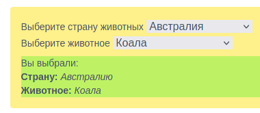
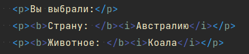
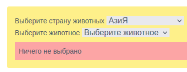

- 1 -
Имеется такая вёрстка:
выбираемый список стран (id: countries),
выбираемый список животных (id: animals),
результат выбора (id: animal_selecting_result)
Ничего не выбрано
-
Данные находятся в файле
./01.js. Работу производить там же - Необходимо, когда пользователь выберет страну, перерисовывать животных, которых можно выбрать. При смене страны в списке животных отображать: Выберите животное
- Когда пользователь выберет животное, в результате отображать какую страну и животное он выбрал
- До момента, когда всё выбрано, в результате отображать единственная строка Ничего не выбрано
- Когда пользователь отвыбирает страну, т.е. выбирает пункт: Выберите страну, нужно сбрасывать выбор животного, т.е. выбирать null, так же изменять в необходимый вид результат
-
Когда ничего не выбрано результат должен отображаться с красным фоном,
иначе с зелёным. В первом случае нужно добавить класс
bg-red-300. Во втором -bg-lime-300 -
как выглядит, когда всё выбрано
  -
когда не выбрано:

- 2 -
Имеется следующая вёрстка:
8 тёмных блоков (тэг i)
и 8 светлых (тэг b)
- Необходимо не удаляя элементы и не создавая новые, перетасовать их так, чтобы получилась шахматная доска
-
Для этого задания есть файл
./02.js